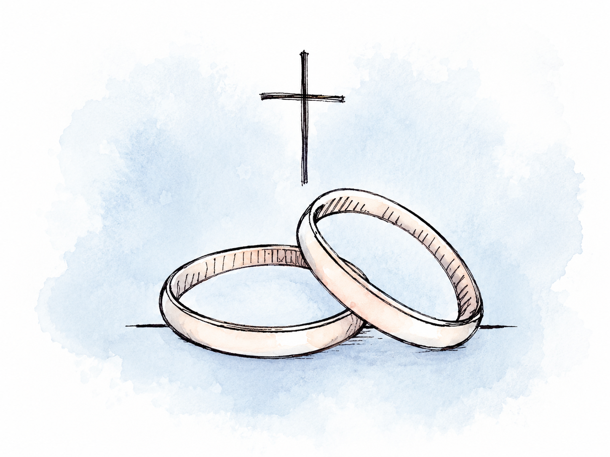

SACRAMENTOS
CASAMIENTO
QUE ES?
El Matrimonio es el sacramento por el cual un hombre y una mujer, unidos libremente ante Dios y la Iglesia, forman una alianza de amor para toda la vida. En el matrimonio cristiano, los esposos se comprometen a vivir en fidelidad, unidad y apertura a la vida, construyendo juntos una familia fundada en el amor de Cristo.
La Iglesia enseña que la alianza matrimonial está ordenada al bien de los esposos y a la generación y educación de los hijos, y que entre bautizados fue elevada por Cristo a la dignidad de sacramento.
El Matrimonio no es solamente una celebración social o familiar: es una vocación y un camino de santidad. Los esposos, con la gracia de Dios, se ayudan mutuamente a crecer en el amor, en la fe y en el servicio.
QUIENES PUEDEN RECIBIRLO?
Los novios que deseen unirse en matrimonio, y al menos uno de ellos esté bautizado.
COMO SE PUEDE EN NUESTRA PARROQUIA?
Consultar en secretaría parroquial para conocer los requisitos, la documentación necesaria, fechas disponibles y preparación previa.
